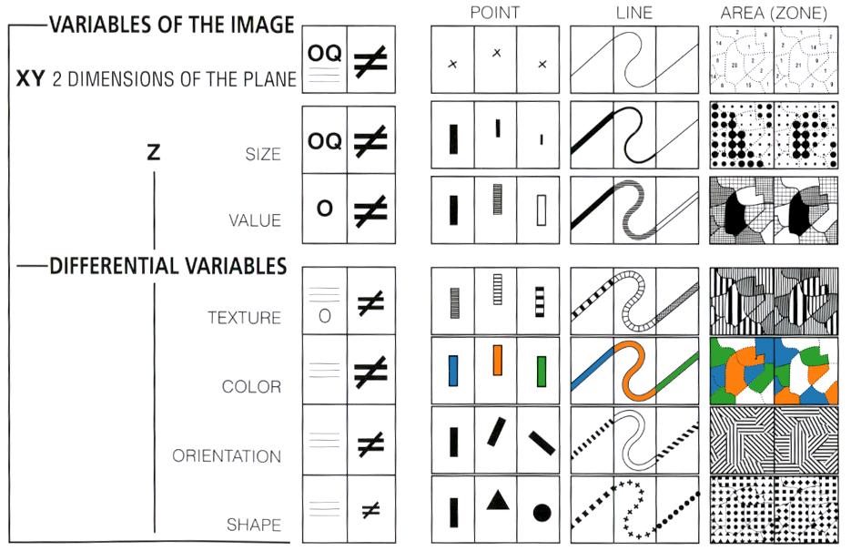

# import altair with an abbreviated alias
import altair as alt
# load a sample dataset as a pandas DataFrame
from altair.datasets import data
cars = data.cars()
# make the chart
alt.Chart(cars).mark_point().encode(
x='Horsepower',
y='Miles_per_Gallon',
color='Origin',
).interactive()8 Introduzione ad Altair
Altair e una libreria dichiarativa per la visualizzazione dei dati.
Per dichiarativa si intende che, ai fine della creazione di un grafico, l’utente non deve far altro che dichiarare un collegamento fra campi nei dati (colonne, attributi) e proprieta grafiche della visualizzazione.
Questo processo avviene dichiarando cosa si vuole visualizzare in termini di simbolo, dati, canali di codifica. Dove: - simbolo: simbolo (punto, barra…) associato ad ognuna delle entrate del dataset, - dati: il dataset che vogliamo visualizzare, - canali di codifica: metodi con i quali e possibile dichiarare un collegamento (mappa) tra proprieta grafiche (colore, forma, assi) e colonne del dataset.
L’idea fondamentale dietro alle librerie moderne di visualizzazione e quella di implementare una grammar of graphics, introdotta perla prima volta nel 1999.
Nonostante questo paradigma rivoluzionario per la creazione di un linguaggio di programmazione per la visualizzazione, la grafica ha una storia molto lunga.

Esempio di grafico con Altair (statico , interattivo)
import pandas as pd
cars.head()| Name | Miles_per_Gallon | Cylinders | Displacement | Horsepower | Weight_in_lbs | Acceleration | Year | Origin | |
|---|---|---|---|---|---|---|---|---|---|
| 0 | chevrolet chevelle malibu | 18.0 | 8 | 307.0 | 130 | 3504 | 12.0 | 1970-01-01 | USA |
| 1 | buick skylark 320 | 15.0 | 8 | 350.0 | 165 | 3693 | 11.5 | 1970-01-01 | USA |
| 2 | plymouth satellite | 18.0 | 8 | 318.0 | 150 | 3436 | 11.0 | 1970-01-01 | USA |
| 3 | amc rebel sst | 16.0 | 8 | 304.0 | 150 | 3433 | 12.0 | 1970-01-01 | USA |
| 4 | ford torino | 17.0 | 8 | 302.0 | 140 | 3449 | 10.5 | 1970-01-01 | USA |
8.0.1 💊 Altair in pillole
Altair si basa sui Pandas Dataframe.
import pandas as pd
data = pd.DataFrame({'a': list('CCCDDDEEE'), 'b': [2, 7, 4, 1, 2, 6, 8, 4, 7]})
data| a | b | |
|---|---|---|
| 0 | C | 2 |
| 1 | C | 7 |
| 2 | C | 4 |
| 3 | D | 1 |
| 4 | D | 2 |
| 5 | D | 6 |
| 6 | E | 8 |
| 7 | E | 4 |
| 8 | E | 7 |
L’oggetto fondamentale del pacchetto e il Chart che prende come input un DataFrame.
import altair as alt
alt.Chart(data)--------------------------------------------------------------------------- SchemaValidationError Traceback (most recent call last) File ~/Documents/Coding/PythonForDataAnanlysis/.venv/lib/python3.13/site-packages/altair/vegalite/v6/api.py:4173, in Chart.to_dict(self, validate, format, ignore, context) 4171 copy.data = core.InlineData(values=[{}]) 4172 return super(Chart, copy).to_dict(**kwds) -> 4173 return super().to_dict(**kwds) File ~/Documents/Coding/PythonForDataAnanlysis/.venv/lib/python3.13/site-packages/altair/vegalite/v6/api.py:2121, in TopLevelMixin.to_dict(self, validate, format, ignore, context) 2118 # remaining to_dict calls are not at top level 2119 context["top_level"] = False -> 2121 vegalite_spec: Any = _top_schema_base(super(TopLevelMixin, copy)).to_dict( 2122 validate=validate, ignore=ignore, context=dict(context, pre_transform=False) 2123 ) 2125 # TODO: following entries are added after validation. Should they be validated? 2126 if is_top_level: 2127 # since this is top-level we add $schema if it's missing File ~/Documents/Coding/PythonForDataAnanlysis/.venv/lib/python3.13/site-packages/altair/utils/schemapi.py:1238, in SchemaBase.to_dict(self, validate, ignore, context) 1236 self.validate(result) 1237 except jsonschema.ValidationError as err: -> 1238 raise SchemaValidationError(self, err) from None 1239 return result SchemaValidationError: '{'data': {'name': 'data-9b610f80003d046838adda5e50d859e9'}}' is an invalid value. 'mark' is a required property
alt.Chart(...)8.0.1.1 🔣 Simbolo e Codifica
In questo modo abbiamo definito il nostro grafico, ma non abbiamo dichiarato come lavorare con i dati.
A questo punto dobbiamo scegliere un simbolo con il quale i nostri dati saranno visualizzati. In questo caso prendiamo un punto.
alt.Chart(data).mark_point()Successivamente possiamo specificare delle mappe fra proprieta del grafico (x,y,colore, forma del punto, dimensione del punto) e valori presenti nel dataset (le colonne del dataframe).
alt.Chart(data).mark_point().encode(
alt.X('a'),
)alt.Chart(data).mark_point().encode(
alt.X('a'),
alt.Y('b')
)Inoltre con Altair possiamo dichiarare anche delle operazioni sui dati che poi andremo a visualizzare. Ad esempio:
alt.Chart(data).mark_point().encode(
alt.X('a'),
alt.Y('average(b)'),
)Se volessimo ottenere un istogramma, lo possiamo fare sostituendo il tipo di simbolo (mark) associato alla visualizzazione di un dato. In questo caso non dobbiamo far altro che sostituire il simbolo punto con il simbolo barra.
alt.Chart(data).mark_bar().encode(
alt.X('a'),
alt.Y('average(b)'),
)Altair e pieno di notazioni semplificate per le sue funzioni. Prima abbiamo scritto:
alt.Y('average(b)')Il codice esteso equivalente a questo snippet e:
alt.Y('b', type = 'quantitave', aggregate = 'average')Un’altra osservazione importante e che il tipo (type) del dato viene automaticamente inferito da Altair nel caso in cui si vogliano visualizzare i dati presenti in un DataFrame di pandas e non altrimenti. In questo caso dovremmo manualmente specificare il tipo di dato con una delle seguenti notazioni:
alt.Y('b:Q')
alt.Y('b', type = 'quantitative')# pandas riconosce automaticamente il tipo di dato
data.dtypesa object
b int64
dtype: object# Altair inferisce di dover calcolare la media del valore b da mostrare sul chart
alt.Chart(data).mark_bar().encode(
alt.X('a'),
alt.Y('b'),
)# istogramma a barre orizzontali
alt.Chart(data).mark_bar().encode(
alt.Y('a'),
alt.X('average(b)'),
)8.0.1.2 🖌️ Personalizzazione del grafico
Di default Altair opera delle scelte sullo stile della visualizzazione, che pero possono essere specificatee diversamente dall’utente.
# aggiunta di un nome per gli assi, colore personalizzato per le barre
alt.Chart(data).mark_bar(color='firebrick').encode(
alt.Y('a').title('category'),
alt.X('average(b)').title('avg(b) by category')
)8.0.1.3 💾 Salvataggio del Grafico
Una volta che il nostro grafico e completo non rimane altro da fare che salvarlo.
chart = alt.Chart(data).mark_bar(color='firebrick').encode(
alt.Y('a').title('category'),
alt.X('average(b)').title('avg(b) by category')
)
chart.save('chart.html')8.0.1.4 🛻 Esempio
In questo sezione, come esempio, ricostruiremo passo per passo il grafico che abbiamo visto all’inizio del notebook.
import pandas as pd
import altair as alt
from vega_datasets import data # import vega_datasets
cars = data.cars() # load cars data as a Pandas data frame
cars.head() # display the first five rows| Name | Miles_per_Gallon | Cylinders | Displacement | Horsepower | Weight_in_lbs | Acceleration | Year | Origin | |
|---|---|---|---|---|---|---|---|---|---|
| 0 | chevrolet chevelle malibu | 18.0 | 8 | 307.0 | 130.0 | 3504 | 12.0 | 1970-01-01 | USA |
| 1 | buick skylark 320 | 15.0 | 8 | 350.0 | 165.0 | 3693 | 11.5 | 1970-01-01 | USA |
| 2 | plymouth satellite | 18.0 | 8 | 318.0 | 150.0 | 3436 | 11.0 | 1970-01-01 | USA |
| 3 | amc rebel sst | 16.0 | 8 | 304.0 | 150.0 | 3433 | 12.0 | 1970-01-01 | USA |
| 4 | ford torino | 17.0 | 8 | 302.0 | 140.0 | 3449 | 10.5 | 1970-01-01 | USA |
# tipi di dati in cars
cars.dtypesName object
Miles_per_Gallon float64
Cylinders int64
Displacement float64
Horsepower float64
Weight_in_lbs int64
Acceleration float64
Year datetime64[ns]
Origin object
dtype: object# passo 0: creazione dell'oggetto Chart
alt.Chart(cars).mark_point()# passo 1: codifica dei channel grafici degli assi (x,y) con attributi di cars
alt.Chart(cars).mark_point().encode(
x='Horsepower',
y='Miles_per_Gallon',
)# passo 2: codifica del channel grafico colore con l'attributo origin di cars
alt.Chart(cars).mark_point().encode(
x='Horsepower',
y='Miles_per_Gallon',
color='Origin',
)# se avessimo scelto di codificare anche il channel forma con Origin di cars
alt.Chart(cars).mark_point().encode(
alt.X('Horsepower'),
alt.Y('Miles_per_Gallon'),
alt.Shape('Origin'),
alt.Color('Origin')
)Infine non ci rimane che renderlo interattivo.
alt.Chart(cars).mark_point().encode(
x='Horsepower',
y='Miles_per_Gallon',
color='Origin',
tooltip = ['Year']
).interactive()8.1 ⭐ Altair
8.1.1 Tipologia di dati
Altair si basa sui DataFrame di pandas. Tuttavia ne richiede una formattazione particolare che prende il nome di tidy. L’idea principale e che per funzionare al meglio, Altair ha bisogno che tutti i dati siano presenti all’interno della tabella.
Dobbiamo trattare questo concetto fondante della maggior parte delle librerie di visualizzazione in maniera piu rigorosa.
8.1.1.1 📖 Cosa si Intende per Tidy Data?
I Tidy Data sono un modo standardizzato e strutturato di organizzare i dati tabulari che rende l’analisi e la visualizzazione molto più semplici ed efficienti.
Un set di dati è considerato tidy se rispetta tre regole fondamentali: - Ogni variabile ha la sua colonna. (Ad esempio, Nome, Età, Paese). - Ogni osservazione ha la sua riga. (Ad esempio, i dati completi di una singola persona o di un singolo esperimento). - Ogni valore ha la sua cella.
La forma tidy è quella preferita dalla maggior parte delle librerie di visualizzazione (come Altair) e di analisi statistica (come seaborn o statsmodels), poiché permette di mappare direttamente le colonne alle variabili estetiche (ad esempio, l’asse X, l’asse Y, il colore).
8.1.1.2 🧼 Esempio di DataFrame Non-Tidy
Un DataFrame è tipicamente non-tidy quando i nomi delle variabili sono archiviati come valori all’interno di una riga o di una colonna, invece di essere colonne a sé stanti. Questo è spesso il caso in cui ci sono colonne multiple che rappresentano una singola variabile.
Consideriamo un esempio in cui abbiamo le vendite di due prodotti in diversi mesi.
DataFrame Non-Tidy (Formato Wide)
In questo esempio, Prodotto_A e Prodotto_B sono trattati come colonne, ma in realtà sono valori della variabile che dovrebbe essere chiamata Prodotto.
import pandas as pd
# DataFrame NON-TIDY (Wide)
df_wide = pd.DataFrame({
'Mese': ['Gen', 'Feb'],
'Prodotto_A': [100, 120],
'Prodotto_B': [150, 160]
})
print("DataFrame Non-Tidy (Wide):\n", df_wide)
# Operazione di 'melt' per trasformare in Tidy Data (Long)
df_tidy = pd.melt(
df_wide,
# Colonna che non deve essere modificata
id_vars=['Mese'],
# Nome della nuova colonna che conterrà i vecchi nomi di colonna (es. 'Prodotto_A')
var_name='Prodotto',
# Nome della nuova colonna che conterrà i valori (es. 100, 150)
value_name='Vendite'
)
print("\nDataFrame Tidy (Long):\n", df_tidy)DataFrame Non-Tidy (Wide):
Mese Prodotto_A Prodotto_B
0 Gen 100 150
1 Feb 120 160
DataFrame Tidy (Long):
Mese Prodotto Vendite
0 Gen Prodotto_A 100
1 Feb Prodotto_A 120
2 Gen Prodotto_B 150
3 Feb Prodotto_B 1608.1.1.3 📊 Il Chart ed i suoi parametri
L’oggetto principale della libreria e il Chart. Questo oggetto possiede un parametro principale, quello associato al simbolo con cui identificare i dati della tabella che vogliamo visualizzare: mark_<symbol>.
# DataFrame esemplificativo
df = pd.DataFrame({
'city': ['Seattle', 'Seattle', 'Seattle', 'New York', 'New York', 'New York', 'Chicago', 'Chicago', 'Chicago'],
'month': ['Apr', 'Aug', 'Dec', 'Apr', 'Aug', 'Dec', 'Apr', 'Aug', 'Dec'],
'precip': [2.68, 0.87, 5.31, 3.94, 4.13, 3.58, 3.62, 3.98, 2.56]
})
df| city | month | precip | |
|---|---|---|---|
| 0 | Seattle | Apr | 2.68 |
| 1 | Seattle | Aug | 0.87 |
| 2 | Seattle | Dec | 5.31 |
| 3 | New York | Apr | 3.94 |
| 4 | New York | Aug | 4.13 |
| 5 | New York | Dec | 3.58 |
| 6 | Chicago | Apr | 3.62 |
| 7 | Chicago | Aug | 3.98 |
| 8 | Chicago | Dec | 2.56 |
alt.Chart(df).mark_point()A questo punto, per creare un grafico a partire dai dati, non dobbiamo fare altro che dichiarare una mappa fra i campi del DataFrame (city, month, precip) e gli encoding channel (proprieta grafiche del Chart), che possono essere di diversa natura.
alt.Chart(df).mark_point().encode(
alt.X('precip'),
alt.Y('city')
)alt.Chart(df).mark_point().encode(
x = 'precip:Q',
y = 'city:N'
)In questo caso, visto che utilizziamo un DataFrame per i dati, possiamo non specificare il tipo di dato all’interno di encode. Infatti Altair lo ricavi automaticamente dal pandas DataFrame.
💡 E senza DataFrame?
Se non ci trovassimo in questo caso, dovremmo esplicitamente dichiarare il tipo di dato con la seguente sintassi: -
b:Nindicates a nominal type (unordered, categorical data), -b:Oindicates an ordinal type (rank-ordered data), -b:Qindicates a quantitative type (numerical data with meaningful magnitudes), and -b:Tindicates a temporal type (date/time data)
# cosa succede se cambiamo il tipo di precip?
alt.Chart(df).mark_point().encode(
x = 'precip:Q',
y = 'city'
)Inoltre e possibile specificare funzioni di aggregazione sui dati, per poi visualizzarle del grafico creato.
# media
alt.Chart(df).mark_point().encode(
x='average(precip)',
y='city'
)# deviazione standard
alt.Chart(df).mark_point().encode(
x='stdev(precip)',
y='city'
)# minimo
alt.Chart(df).mark_point().encode(
x='min(precip)',
y='city'
)Un’altra proprieta del grafico che possiamo modificare e il tipo di smbolo associato ad ogni dato, il mark.
# istogramma
alt.Chart(df).mark_bar().encode(
x='average(precip)',
y='city'
)Anche attributi estetici del grafico possono essere modificati a partire da valori di default.
In generale si possono ottenere grafici arbitratriamente complessi a partire dai mattoncini di base che abbiamo visto fino ad ora.
alt.Chart(df).mark_point(color='firebrick').encode(
alt.X('precip', scale=alt.Scale(type='log'), axis=alt.Axis(title='Log-Scaled Values')),
alt.Y('city', axis=alt.Axis(title='Category')),
)8.1.1.4 👬 Grafici Multipli
Possiamo anche creare grafici multipli grazie ad Altair. Questa funzionalita e importante nel momento in cui si vuole creare una dashboard, ovvero una tabella riassuntiva che sintetizzi i risultati della nostra analisi graficamente.
alt.Chart(cars).mark_line().encode(
alt.X('Year'),
alt.Y('average(Miles_per_Gallon)')
)Due o piu Chart possono essere combinati tramite un’algebra molto semplice.
line = alt.Chart(cars).mark_line().encode(
alt.X('Year'),
alt.Y('average(Miles_per_Gallon)')
)
point = alt.Chart(cars).mark_circle().encode(
alt.X('Year'),
alt.Y('average(Miles_per_Gallon)')
)
line + point # | point | linePossiamo ottenere lo stesso risultato anche modificando il Chart principale, ottenendo un codice piu conciso e mantenibile.
mpg = alt.Chart(cars).mark_line().encode(
alt.X('Year'),
alt.Y('average(Miles_per_Gallon)')
)
mpg + mpg.mark_circle()Se volessimo visualizzare uno o piu grafici in sequenza, possiamo concatenarli tramite l’operatore |.
hp = alt.Chart(cars).mark_line().encode(
alt.X('Year'),
alt.Y('average(Horsepower)')
)
(mpg + mpg.mark_circle()) | (hp + hp.mark_circle())❔ Che tipo di informazione possiamo ricavare da questi grafici?
8.1.1.5 🔦 Interattivita
Tutti i grafici di Altair possono essere resi interattivi.
Per ottenere un grafico interattivo basilare e possibile utilizzare il metodo interactive() dell’oggetto Chart.
# make the chart
alt.Chart(cars).mark_point().encode(
x='Horsepower',
y='Miles_per_Gallon',
color='Origin',
tooltip = ['Name', 'Origin'] # provide more details as mouse hover
).interactive()Parleremo di come ottenere interazioni piu complesse piu avanti.
8.1.1.6 Esempio
Di seguito si riporta un esempio che potremo capire solamente al termine dei notebook, ma che rappresenta un punto d’arrivo ed una dimostrazione delle possibilita della libreria Altair.
# create an interval selection over an x-axis encoding
brush = alt.selection_interval(encodings=['x'])
# determine opacity based on brush
opacity = alt.condition(brush, alt.value(0.9), alt.value(0.1))
# an overview histogram of cars per year
# add the interval brush to select cars over time
overview = alt.Chart(cars).mark_bar().encode(
alt.X('Year:O', timeUnit='year', # extract year unit, treat as ordinal
axis=alt.Axis(title=None, labelAngle=0) # no title, no label angle
),
alt.Y('count()', title=None), # counts, no axis title
opacity=opacity # type: ignore
).add_params(
brush # add interval brush selection to the chart
).properties(
width=400, # set the chart width to 400 pixels
height=50 # set the chart height to 50 pixels
)
# a detail scatterplot of horsepower vs. mileage
# modulate point opacity based on the brush selection
detail = alt.Chart(cars).mark_point().encode(
alt.X('Horsepower'),
alt.Y('Miles_per_Gallon'),
# set opacity based on brush selection
opacity=opacity
).properties(width=400) # set chart width to match the first chart
# vertically concatenate (vconcat) charts using the '&' operator
overview & detail